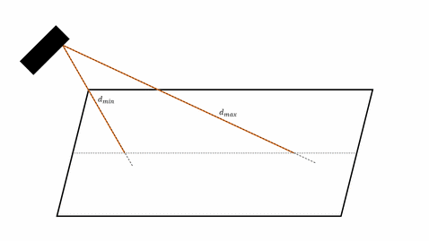

Reaction strategies
This reaction strategy document is motivated by the fact that different error codes have different implications and severity and therefore have to be treated differently.
Severity levels definitions
Severity |
Meaning |
|---|---|
Information |
This level is used to convey information to the user. No persistent error has occurred. No action needs to be taken by the user. The system remains in full operational state. |
Warning |
This level indicates that an error was detected but is not serious enough to interfere with the running of the system and potential embedded applications. |
Severe Error |
This level indicates that a serious error was detected and is persistent. |
Unrecoverable |
This level usually indicates an error that forces termination of respective embedded process. |
Severity level dependent actions
Please verify by the error code severity level if this error inhibits the operation of the device. Act accordingly as described in the handling strategy.
Boot-Sequence
ID |
Name |
Description |
Severity level |
Handling strategy |
|---|---|---|---|---|
101014 |
ERROR_BOOT_SEQUENCE_VPU_EEPROM |
VPU EEPROM content invalid |
Severe |
VPU specific EEPROM content can not be read. reboot if persistent factory reset |
101018 |
ERROR_BOOT_SEQUENCE_INVALID_CONFIGURATION |
Unable to construct a valid device configuration |
Unrecoverable |
Bring-up failed and unrecoverable. Manual reconfiguration required. reboot if persistent factory reset |
ID |
Name |
Description |
Severity level |
Handling strategy |
|---|---|---|---|---|
101006 |
ERROR_BOOT_SEQUENCE_PORT_CALIBRATION |
The port calibration is invalid |
Severe / Unrecoverable |
reboot if persistent factory reset |
101007 |
ERROR_BOOT_SEQUENCE_PORT_INVALID_CONFIGURATION |
The init configuration does not match the port |
Severe |
The configuration saved on the device ( |
101015 |
ERROR_BOOT_SEQUENCE_PORT_DUMMY_CALIBRATION |
A dummy calibration is used for the port |
Severe |
A dummy calibration is used during runtime. Measurement performance and accuracy is reduced. reboot if persistent after factory reset the hardware needs to be replaced. |
101017 |
ERROR_BOOT_SEQUENCE_PORT_CONFIGURATION_TIMEOUT |
The imager did not respond to the frame software |
Severe |
Camera head did not respond within 5 sec after boot-up. reboot if persistent over runtime and re-flash FW. A hardware replacement of the head might be required. |
101019 |
ERROR_BOOT_SEQUENCE_PORT_EEPROM_OVERRIDE |
A user-provided EEPROM file is used instead of the actual EEPROM |
Severe |
User specified EEPROM content used. |
101020 |
ERROR_BOOT_SEQUENCE_PORT_CALIBRATION_OVERRIDE |
A user-provided calibration file is used |
Severe |
User specified calibration used. |
101021 |
ERROR_BOOT_SEQUENCE_PORT_IDENTIFICATION |
Port identification data is invalid |
Severe |
Camera head can not be identified. reboot. |
ID |
Name |
Description |
Severity level |
Handling strategy |
|---|---|---|---|---|
101000 |
ERROR_BOOT_SEQUENCE_TCU_INVALID_FW |
The installed TCU firmware is incompatible |
Severe / Unrecoverable |
TCU firmware is not compatible / was not updated automatically to the correct FW dependent version |
ID |
Name |
Description |
Severity level |
Handling strategy |
|---|---|---|---|---|
101004 |
ERROR_BOOT_SEQUENCE_HEAD_INVALID_DRIVER |
The appropriate driver for the connected head is not available |
Unrecoverable |
The camera head hardware may not be supported by this VPU and firmware. Disconnect all camera heads |
101008 |
ERROR_BOOT_SEQUENCE_HEAD_INVALID_SERIALNUMBER |
The serial number of an extrinsically calibrated head does not match; please recalibrate after changing heads |
Unrecoverable |
The extrinsic calibration saved on the device ( |
101016 |
ERROR_BOOT_SEQUENCE_HEAD_INVALID_COMBINATION |
Only 2D/2D pairing or 3D/3D pairing is allowed |
Unrecoverable |
Different camera streams connected to the same deserializer. Update hardware connectivity and reboot |
ID |
Name |
Description |
Severity level |
Handling strategy |
|---|---|---|---|---|
101010 |
ERROR_BOOT_SEQUENCE_HEAD_ICC_FW_CHECK |
Due to incorrect ICC firmware data an ICC update is attempted |
Warning |
The illumination controller FW does not match the one required by the device FW. Wait for the ICC FW update to complete. If persistent over > 5 min reboot. If persistent over reboots re-flash FW. |
101011 |
ERROR_BOOT_SEQUENCE_HEAD_ICC_FW_UPDATE |
The ICC firmware data is still incorrect after an ICC update |
||
101012 |
ERROR_BOOT_SEQUENCE_HEAD_ICC_FW_INCOMPATIBLE |
Due to an incompatible ICC firmware version an ICC update is attempted |
Warning |
The illumination controller FW does not match the one required by the device FW. Wait for the ICC FW update to complete. If persistent over > 5 min reboot. If persistent over reboots re-flash FW. |
101011 |
ERROR_BOOT_SEQUENCE_HEAD_ICC_FW_UPDATE |
The ICC firmware data is still incorrect after an ICC update |
||
101013 |
ERROR_BOOT_SEQUENCE_HEAD_ICC_FLASH |
Unable to read the ICC flash |
Unrecoverable |
The illumination controller FW does not match the one required by the device FW. reboot. If persistent over reboots re-flash FW. |
101011 |
ERROR_BOOT_SEQUENCE_HEAD_ICC_FW_UPDATE |
The ICC firmware data is still incorrect after an ICC update |
Unrecoverable |
The illumination controller FW does not match the one required by the device FW. reboot. If persistent over reboots re-flash FW. |
ID |
Name |
Description |
Severity level |
Handling strategy |
|---|---|---|---|---|
101002 |
ERROR_BOOT_SEQUENCE_IMU_INVALID_HW |
The installed IMU (if any) was not recognised |
Unrecoverable |
Detected IMU hardware is not compatible. |
101003 |
ERROR_BOOT_SEQUENCE_IMU_INVALID_CALIBRATION |
The IMU calibration is either missing or incorrect |
Unrecoverable |
Invalid IMU calibration used at boot-up - re-flash FW |
VPU
ID |
Name |
Description |
Severity level |
Handling strategy |
|---|---|---|---|---|
103002 |
ERROR_VPU_OVERVOLTAGE_24V |
Overvoltage was detected for the 24V line |
Warning |
Fix power supply |
103003 |
ERROR_VPU_UNDERVOLTAGE_24V |
Undervoltage was detected for the 24V line |
Unrecoverable |
This error may cause undefined system states. Fix power supply and reboot |
103004 |
ERROR_VPU_OVERVOLTAGE_5V |
Overvoltage was detected for the 5V line |
Warning |
Fix power supply |
103005 |
ERROR_VPU_UNDERVOLTAGE_5V |
Undervoltage was detected for the 5V line |
Unrecoverable |
This error may cause undefined system states. Fix power supply and reboot |
103006 |
ERROR_VPU_OVERVOLTAGE_1_8V |
Overvoltage was detected for the 1.8V line |
Warning |
Fix power supply |
103007 |
ERROR_VPU_UNDERVOLTAGE_1_8V |
Undervoltage was detected for the 1.8V line |
Unrecoverable |
This error may cause undefined system states. Fix power supply and reboot |
103008 |
ERROR_VPU_OVERTEMPERATURE |
Detected overtemperature for VPU main board |
Severe |
Provide adequate (passive) cooling via heat conduction and convection. The systems CPU and GPU performance will be throttled until adequate temperatures are reached. |
103009 |
ERROR_VPU_NTP_NOT_SYNCHRONIZED |
Unable to synchronise time with NTP server |
Warning |
Check NTP server availability and correct configuration. |
103010 |
ERROR_VPU_TRIGGER_OVERRUN |
A trigger overrun was detected |
Severe |
The trigger signal are not consistent: data may be lost due to lost trigger signals. |
103011 |
ERROR_VPU_NO_FREE_IMAGEBUFFERS |
More image buffers are needed than are available |
Warning (sporadic) /Severe (permanent) |
The data is not send fast enough. In consequence the internal queues have filled up. This may be because of internal application streams switching or because of a slow receiver. |
103012 |
ERROR_VPU_WATCHDOG_TIMEOUT |
A watchdog timeout occurred; the component was restarted |
Severe |
Internal data evaluation processes have not responded in time and are restarted. |
ID |
Name |
Description |
Severity level |
Handling strategy |
|---|---|---|---|---|
103000 |
ERROR_VPU_COMM_TCU |
Unable to communicate to the TCU |
Unrecoverable |
The internal trigger mechanism is disturbed and image acquisition is not triggered reliably. Reboot |
103001 |
ERROR_VPU_COMM_TEMPSENSOR |
Unable to communicate to the temperature sensor |
Warning |
The internal communication to the VPUs temperature sensor is disturbed. Temperature values might not be accurate. If persistent reboot |
Distance image processing
ID |
Name |
Description |
Severity level |
Handling strategy |
|---|---|---|---|---|
102015 |
ERROR_DI_UNEXPECTED_CALIB_CONTENT |
The port calibration contains unexpected values |
Unrecoverable |
Sanity checks of the 3D calibration file failed. The data acquisition of the respective camera is blocked. This is most likely due to old / incompatible hardware. |
102016 |
ERROR_DI_MOTION_COMP_NO_EGO_DATA |
Expected motion compensation data, but none was received |
Warning |
If motion compensation is activated but can not be performed due to missing ego data. |
102017 |
ERROR_DI_MOTION_COMP_EGA_DATA_TIMESTAMP_MISMATCH |
Received motion compensation data is too old or contains implausible timestamps |
Warning |
If motion compensation is activated but can not be performed due to ego data unavailability or outdated timestamps. |
Camera head
ID |
Name |
Description |
Severity level |
Handling strategy |
|---|---|---|---|---|
102000 |
ERROR_HEAD_OVERTEMPERATURE_ICC |
Head ICC has overtemperature |
Severe |
Provide adequate (passive) cooling via heat conduction and convection. |
102001 |
ERROR_HEAD_BROWNOUT |
Detected head brownout |
Severe |
Fix power supply - if active / persistent reboot to reset / reboot heads. |
102002 |
ERROR_HEAD_ENVELOPE_PAUSE_VIOLATION |
Detected violation of the envelope pause ratio |
Severe |
If detected the system will enter an error state and block the image acquisition - to reset, reboot. |
102003 |
ERROR_HEAD_OVERVOLTAGE |
Head has overvoltage |
Severe |
The respective head will be blocked from acquiring images until no overvoltage is present - fix the power supply and cables. |
102004 |
ERROR_HEAD_UNDERVOLTAGE |
Head has undervoltage |
Severe |
The respective head will be blocked from acquiring images until no undervoltage is present - fix power supply and cable hardware. A reboot may be required to exit the error state. |
102005 |
ERROR_HEAD_VCSEL_OVERCURRENT |
Head VCSEL has overcurrent |
Unrecoverable |
The active illumination has shut off. The respective head will be blocked from acquiring images until the system is rebooted |
102006 |
ERROR_HEAD_EYESAFETY_SHUTDOWN |
Head was shut down due to eye-safety concerns |
Unrecoverable |
The active illumination has shut off due to a eye safety violation. The respective head (including its illumination) will be blocked until system is rebooted |
102007 |
ERROR_HEAD_INVALID_CALIBRATION |
Head current calibration is invalid |
Unrecoverable |
The respective head has detected a check sum error for its calibration - will be blocked until system is rebooted |
102008 |
ERROR_HEAD_ENVELOPE_PULSE_ERROR |
Detected pulse error for envelope signal |
Unrecoverable |
The active illumination has shut off due to a eye safety violation. The respective head will be blocked until system is rebooted |
102009 |
ERROR_HEAD_VCSEL_OVERTEMPERATURE |
Head VCSEL has overtemperature |
Unrecoverable |
The active illumination has shut off. The respective head will be blocked until system is rebooted |
102010 |
ERROR_HEAD_ENVELOPE_MAX_DURATION |
Maximum length of envelope signal was detected |
Unrecoverable |
The active illumination has shut off due to a eye safety violation. The active illumination has shut off. The respective head will be blocked until system is rebooted |
102012 |
ERROR_HEAD_IMAGER_RESET |
The 3D imager was unexpectedly reset |
Severe |
The respective imager process was reset. Data frames may be lost in the meanwhile. |
102019 |
ERROR_HEAD_VCSEL_OVERVOLTAGE |
Head VCSEL has overvoltage |
Unrecoverable |
The respective head will be blocked from acquiring images until no overvoltage is present - fix the power supply and cables. |
102020 |
ERROR_HEAD_ENVELOPE_PAUSE_CURRENT |
Detected a violation of the envelope pause current |
Unrecoverable |
The active illumination has shut off. The respective head will be blocked from acquiring images until the system is rebooted |
102021 |
ERROR_HEAD_VCSEL_SHUTDOWN |
Head VCSEL was shut down; VPU must be rebooted to recover |
Unrecoverable |
The active illumination has shut off. The respective head will be blocked from acquiring images until the system is rebooted |
IMU
ID |
Name |
Description |
Severity level |
Handling strategy |
|---|---|---|---|---|
104000 |
ERROR_IMU_DATA_IMPLAUSIBLE |
Received implausible IMU data |
Severe |
The system checks for IMU timestamp and temperature value ar implausible. This warning is active until new plausible data is available. |
Hardware port
ID |
Name |
Description |
Severity level |
Handling strategy |
|---|---|---|---|---|
102011 |
ERROR_PORT_FRAME_TIMEOUT |
The 3D imager detected a frame timeout |
Warning (sporadic) / Severe (permanent) |
Data may have been lost, the imager process has recovered. If persistently active reboot |
102013 |
ERROR_PORT_FPDLINK |
An unrecoverable FPD-Link error occurred |
Severe / Unrecoverable |
reboot if persistent check for hardware defects |
102014 |
ERROR_PORT_ALGO_INTERNAL |
Internal error in the port algorithm |
Warning (sporadic) / Severe (permanent) |
If persistent reboot for non-series hardware check internal Algorithmic errors. |
102018 |
ERROR_PORT_MODE_ALGO_INCOMPATIBLE |
The appropriate algorithm for the selected mode is not available |
Unrecoverable |
If persistent reboot. If persistent re-flash FW |
ODS application
ID |
Name |
Description |
Severity level |
Handling strategy |
|---|---|---|---|---|
105000 |
ERROR_ODSAPP_EXTR_VPU_CALIB_IMPLAUSIBLE |
Implausible extrinsic VPU calibration |
Severe |
The app checks plausible IMU / VPU extrinsic calibration. Perform a IMU / VPU calibration and sanity check link. |
105001 |
ERROR_ODSAPP_IMAGE_IMU_DELAY_IMPLAUSIBLE |
Detected an implausible delay between IMU and image data |
Warning (sporadic) / Severe (persistent) |
The app checks plausible 3D data timestamps. No internal escalation is performed if active. |
105002 |
ERROR_ODSAPP_VO_EXTR_DI_CALIB_IMPLAUSIBLE |
Implausible extrinsic calibration of visual odometry head |
Warning |
The app checks camera specific calibration for plausibility. If this error is active the respective camera can not be used in this app for estimating the systems odometry. |
105003 |
ERROR_ODSAPP_PARAMETER_PLAUSIBILITY_CHECK_FAILED |
Implausible ODS configuration parameters |
Severe |
The app checks its configuration for plausibility. If implausible the app is set to error state and has to be reconfigured to exit error state. |
105004 |
ERROR_ODSAPP_VO_IMAGE_FRAMERATE |
Insufficient framerate of ODS input images |
Warning (sporadic) / Severe (permanent) |
The app checks plausible 3D frame timestamps. No internal escalation is performed if active. |
105005 |
ERROR_ODSAPP_INTR_IMU_CALIB_IMPLAUSIBLE |
Implausible intrinsic IMU calibration |
Warning |
The app checks performs repeated IMU standstill calibration during live operation. If the estimated calibration values differ more than the internal threshold from their expected values this error will be activated. |
105006 |
ERROR_ODSAPP_UNSTABLE_FRAMERATES |
Unstable framerate of at least one input stream |
Warning (sporadic) / Severe (permanent) |
At least one sub-component of the app is unstable due to unstable framerate of the input data stream. See ODS unstable framerate |
105007 |
ERROR_ODSAPP_VELOCITY_UNAVAILABLE |
Unable to determine velocity |
Warning |
The app performs ego-motion estimations. No internal escalation is performed if active. Mounting setup. |
105008 |
ERROR_ODSAPP_DEFAULT_ZONE_USED |
Using the default ODS zones |
Info |
The app checks for default zone configuration. No internal escalation is performed if active. To silence this warning change the setting of |
105009 |
ERROR_ODSAPP_STANDSTILL_CHECKS_NOT_EXECUTED |
Standstill condition not detected |
Warning / Severe |
The app failed to perform ego-motion estimations. If the camera is not setup to see the floor, this information can be disregarded. |
105011 |
ERROR_ODSAPP_EXTR_DI_CALIB_IMPLAUSIBLE |
Implausible extrinsic head calibration |
Severe |
The app checks plausible extrinsic head calibration. The O3R ODS app is functional in this state. The extrinsic calibration of the ODS ports must be fixed before new application data will be send. |
105012 |
ERROR_ODSAPP_TEST_MODE_WARNING |
A protected parameter was set to enter a test mode |
Severe |
The app is configured with development features active, for example the overwriting of velocity information status. Such behavior is not expected on devices in operation. To fix this issue please reboot, re-flash. If the error persists after a re-flash please reach out to ifm at support.efector.object-ident@ifm.com. |
105013 |
ERROR_ODSAPP_ERROR_ODSAPP_FOV_INSUFFICIENT_FOR_NEGATIVE_OBSTACLES |
FOV is insufficient for negative obstacle detection |
Severe |
The app detects insufficient amount of floor. No negative obstacles can be detected - the ODS performance is reduced. |
Handling strategies description
Reboot / power cycle
A software reboot can be performed via the ifm3d library through the CLI, Python or c++, or using /sbin/reboot on the VPU.
Alternatively one can power cycle the device: the power connection should be interrupted for at least 5 seconds.
Factory reset
The device can be reset to factory conditions and configuration via the ifm3d CLI, Python or c++.
Flash firmware anew
Update the firmware again. For backward compatibility, see the firmware release notes.
Camera head connectivity
Different camera head imagers, for example 2D RGB or 3D TOF imagers of different resolutions, need to be connected to separate deserializers. Ports [0,1], Ports [2,3], Ports [4,5] are paired to the same deserializer internally and can therefore only handle image streams of the same type. Checks can be performed by verifying the cable description at the mini-FAKRA connector or via the complete JSON system configuration.
Image loss due to trigger overruns
The system runs in a triggered mode internally for “RUN” and “IDLE” state. The difference is: for RUN state the system gets triggered continuously, whereas in “IDLE” state, only single software trigger signals are propagated.
The trigger overrun only applies to the software triggered state “IDLE,” in case multiple trigger signals have been sent and cannot be accepted by the system. In case of trigger overruns the system may have lost trigger signals, which means the respective images may not have been acquired or their frame start may have been delayed by an undefined time. Additionally check for network latency which cause trigger signals to get delayed.
Image buffer availability
Internally, the system monitors its data buffer states. Each data stream is buffered into its own buffers with an anticipated buffer size, depending on the type and data frequency.
When the data is not retrieved fast enough or the queue is not popped often enough, an error is activated:
Externally pointing data streams: the data retrieval rate is not adequate. Possible bottlenecks are: network bottlenecks (insufficient network speed / latency ), OEM application running at low data retrieval rates, etc. Check your software and hardware for bottlenecks.
Internally pointing data stream: an ifm applications on the device is not processing data with the required frequency. See the application specific error codes. Check for additional (Docker based) applications which have high resource requirements.
For case 1 (external): in case data is not retrieved fast enough the data buffer will be partially flushed. For case 2 (internal): in case data is not retrieved fast enough the data acquisition framerate can be slowed down.
Watchdog errors or timeouts
The system monitors its internal process states via watchdogs. Each watchdog has it own respective timeout, which is configured not to activate under normal operation conditions.
High processing requirements or certain re-configurations during runtime can cause sporadic triggers of watchdog timeouts. This can be tracked by dormant and low error counts. This case can be neglected.
In case repeated active watchdog errors and high error counts increases (> 5 per min) the system may not be self recoverable and requires a reboot.
FPD-Link errors
The system monitors the FPD-Link communication between the VPU and each camera head.
The FPD-Link communication can perform self healing actions for most cases. If ERROR_PORT_FPDLINK errors are active the system entered a non-recoverable FPD-Link dependent error state.
Possible sources of such errors are loose cable connections, continuous EMV / ESD disturbances on the cables, damaged cables, etc. Check for possible hardware malfunctions first and replace FAKRA cables to ensure no hardware defects are present.
Internal error in the port algorithm
The algorithmic data evaluation pipeline on the embedded device monitor for uncaught internal error cases. These should not be present for series hardware and software as supplied by ifm.
For pre-release software and prototype hardware this error may occur. Please check the release notes for known defects for your specific non-series software and hardware. For older hardware that is no longer supported by newer firmware or software releases, this error may occur. In these cases the data will most likely still be available but may be reduced in performance and accuracy.
Mounting setup
Depending on the application, specific mounting setups may be required to ensure all required data appears in the FOV of the respective camera head.
Motion compensation
The motion compensation algorithm requires the floor to be part of the scene to work. If the floor is not part of the scene or can not be identified as floor for longer durations (> 50 frames), motion compensation will be deactivated. Fix:
Double check your mounting setup for rigidity.
Check for hardware cleanliness: dust and fingerprints on the housing will reduce performance and possible floor range.
If hardware has recently been replaced check for correct alignment and extrinsically calibrate the system.
Camera head extrinsic calibrations
The camera head specific extrinsic calibration errors are set if the extrinsic camera calibration of the camera assigned for visual odometry is implausible. To this end, the intersection between the camera’s field of view and the floor plane is considered. The minimum radial distance of this intersection must not be larger than 1.0 meters, while the maximum radial distance must be larger than 1.5 meters. This check is only executed once at startup of O3R ODS application.
Implausible extrinsic calibrations
Certain implausible extrinsic calibrations (Camera heads or VPU to RCF) can be detected by the embedded applications. The respective diagnostic messages are activated.
The plausibility checks regarding the extrinsic camera calibration and the extrinsic VPU calibration are based on the following assumptions (identical to those of the O3R ODS application) regarding the definition of the user coordinate system: In the user coordinate system, the ground plane must be z=0. The z-axis of the user coordinate system must point up. The user coordinate system must be right-handed. It is also assumed that gravity acts along the z-axis of the user coordinate system (at least during the initial standstill after starting the O3R ODS application).
VPU: This error is set when the extrinsic VPU calibration is implausible. The extrinsic VPU calibration is considered plausible if the angle between the measured acceleration and the expected acceleration, that is gravity acting along the z-axis of the user coordinate system, does not exceed five degrees. This check is performed only at rest. Once the extrinsic VPU calibration has been verified as plausible, this check is no longer performed until the O3R ODS application is restarted.
Check the setting in /applications/instances/appX/configuration/vo/voPorts and remove the incorrect port from the list. Please note that the performance of O3R ODS applications will be degraded if ego-motion cannot be estimated. Such configurations are only supported if the AMR is running at slow speeds (< 0.5 m/s).
Camera heads:
Since visual odometry is obtained from image measurements in the ground plane, the plausibility check of the extrinsic camera calibration (or rather the suitability for visual odometry) considers the intersection between the camera’s field of view and the ground plane. The minimum radial distance of this intersection must not be greater than 1.0 meters, while the maximum radial distance must be greater than 1.5 meters. If this is not the case, ERROR_ODSAPP_VO_EXTR_DI_CALIB_IMPLAUSIBLE is set in O3R diagnostics. This check is performed only once at the start of the O3R ODS application.

Floor structure: In addition, visual odometry requires the floor to have a minimum amount of structure or texture. In addition to the actual texture of the floor (such as aggregate in concrete), lane markings, abrasions, or scratches usually provide texture to the floor.
Ego-motion estimation based on IMU measurements and visual measurements
The internal visual odometry is based on two data sources: IMU measurements and visual measurements. It may be unavailable in cases of insufficient texture on the floor, ambient light, for example sun light, or if only small portions of the floor are visible, for example when an object covers a large part of the field of view. Short-term outages of visual odometry signal, while the vehicle is still moving (up to tens of seconds) can be overcome in most cases. In this case, ego motion becomes available again shortly after the first valid visual odometry updates. Long-term outages (of several minutes) require the vehicle to be at standstill for > 5 sec for the ego motion to become available again and the respective active diagnostics to be reset.
ODS unstable framerate implications
In case an sub-component unstable framerate has been detected the system runs with reduced performance. This includes:
throttled input data stream framerate
reduced output performance or data quality.
This error can be caused by high resource load (CPU / GPU) scenarios on the embedded device. If additional resource heavy software components are run simultaneously this can cause system overload.
Solution strategy:
Pin user processes started from an OEM docker container to the ARM A57 cores of the TX2 unit (by using a taskset of 0x39). Note that the DENVER cores of the TX2 unit are reserved for the ODS application and can not be used by OEM user application.
Reduce the number of simultaneously active cameras (see
/applications/instances/appX/configuration/activePorts)Reduce workload of OEM docker containers by optimizing for runtime or offloading to other processing hardware.
Ethernet connection issues
Ethernet connection issues are as of FW 1.0.14 not tracked as diagnostic events or errors. A Ethernet patch cable disconnect for example will not result in an error state as indicated by the status LEDs or diagnostic entries. Such an error can only be tracked using the ifm3d trace call to retrieve the full embedded systemD journal log.